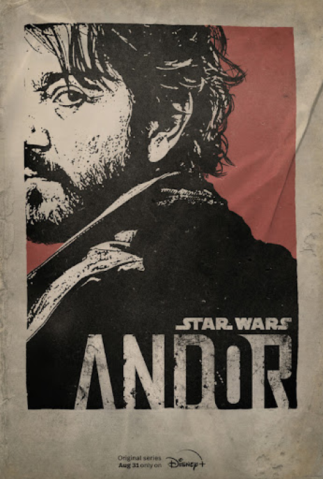

2 outstanding TV series of 2025
|  | |
| Andor | The Rehearsal |
| Tony Gilroy. Drama. Second season aired on Apr 22-May 13 |
Nathan Fielder. Reality. Second season aired on Apr 20-May 25 |
On the other hand there is also airing fifth season of the Stranger Things. First four episodes are already out. 5, 6 and 7 will be on
the Christmas, 25th of December, and the last one the New Year’s Eve, 31st of December. It’s the final season, so you better
don’t miss it! Good luck in avoiding spoilers.